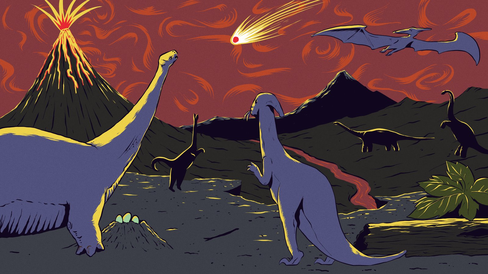
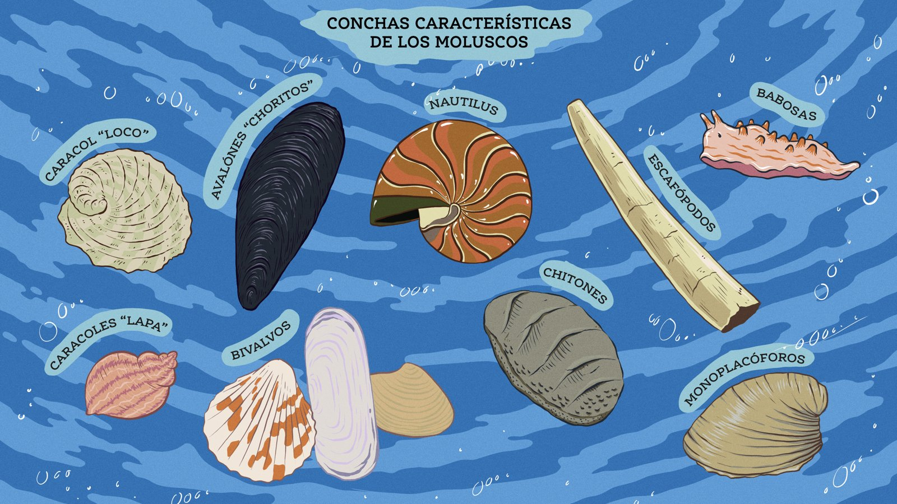
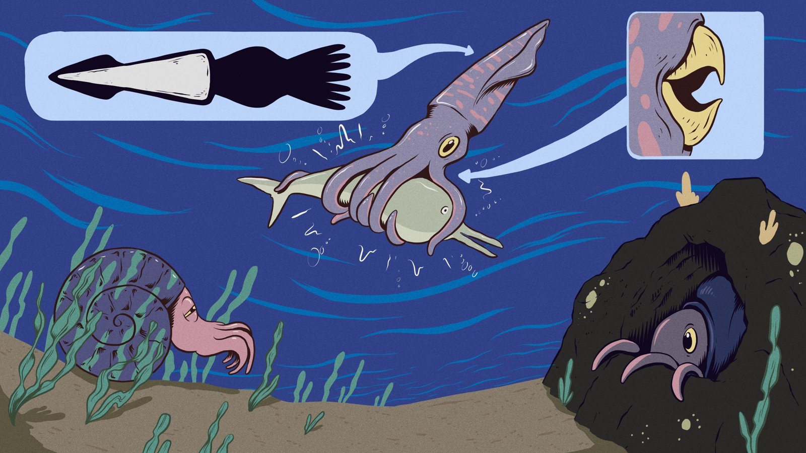
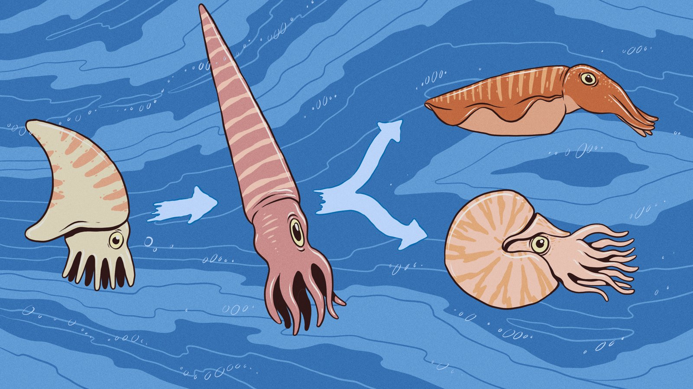
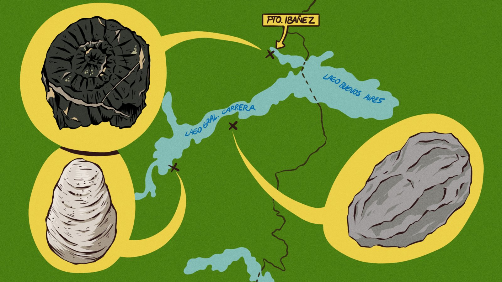

Museo de Aysén





Ilustraciones científicas y didácticas para la museografía del Museo Regional de Aysén: paleontología, fauna marina y mapas de hallazgos de la región.





Ilustraciones científicas y didácticas para la museografía del Museo Regional de Aysén: paleontología, fauna marina y mapas de hallazgos de la región.